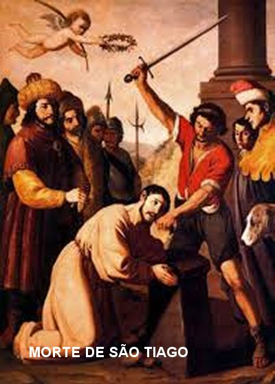
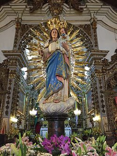
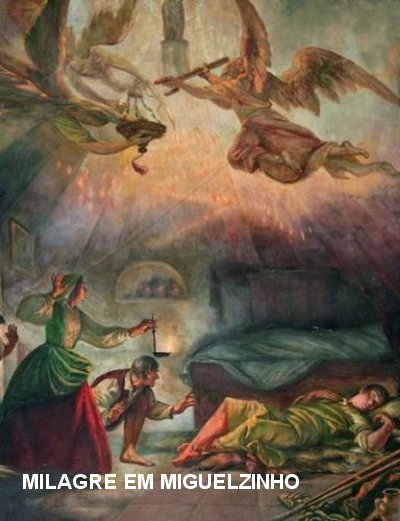
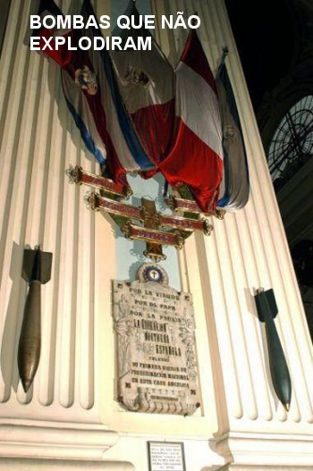

REALIZADA A ORDEM DA SANTA MÃE
Chegou o momento dele se despedir daquele povo carinhoso e amigo de Zaragoza, assim como, de seus fraternos discípulos e colaboradores. Grande parte da Missão estava realizada. É bem verdade que ainda havia muitas coisas necessárias a serem feitas. Mas em face da “Ordem Recebida” estava na hora dele partir. A Missão ia continuar, porque os Dirigentes e os Discípulos que ficaram tinham a bênção dele e o auxílio direto de DEUS. Assim, com muita saudade deixou Zaragoza e partiu da Espanha, para enfrentar uma longa viagem, passando na Itália e Ilhas Gregas até chegar a Jerusalém, como lhe ordenara NOSSA SENHORA. A viagem deve ter seguido o mesmo roteiro anterior, ou seja, de Zaragoza ele deve ter seguido para Marselha na França, e de lá, na companhia de um Discípulo, pegou uma embarcação para o Oriente Médio.
CHEGADA A JERUSALÉM E MORTE
Assim que Chegou a
Jerusalém, Tiago procurou os cristãos para lhes descrever sobre as Comunidades
Cristãs, e 
Acontece que o Rei Herodes Agripa I, filho do falecido Rei Herodes Magno, era terrível e invejoso como o seu pai, e não gostou daquelas notícias. Naquela época ele se esforçava para agradar aos judeus, assim como, melhorar o seu relacionamento com o povo. Por isso começou a maltratar os membros da Igreja. E fez mais, não gostando de ouvir aqueles comentários elogiosos a Obra de Tiago Maior na Espanha, mandou matá-lo a espada aonde estivesse. As noticias correram. Vendo que aquela ordem dada por ele agradava aos judeus, também mandou prender Pedro.
Os soldados de Herodes encontraram Tiago na rua, próximo ao Mercado de Jerusalém, onde há poucos momentos ele havia deixado o seu discípulo. Ali mesmo, na rua, o agrediram e publicamente o decapitaram a espada. Os Atos dos Apóstolos confirma que o Apóstolo Tiago Maior foi morto por ordem de Herodes Agripa no Ano 44. (At 12,2)
O CORPO DO APÓSTOLO
O corpo do Apóstolo esteve algum tempo num sepulcro perto de Jerusalém e ali, muitos cristão rezavam e alcançaram preciosos milagres de DEUS pela intercessão de São Tiago. Como a perseguição ao Cristianismo continuava intensa e destruidora, anos mais tarde os ossos foram transferidos para a Espanha, sendo depositados na Catedral de Santiago de Compostela, situada na cidade de mesmo nome. Santiago de Compostela tornou-se a capital da Galícia, onde ele e seus Discípulos quando estiveram na Península Ibérica trabalharam arduamente na Evangelização. O Apóstolo São Tiago pregou na Espanha aproximadamente durante 7 a 8 anos e foi eleito Padroeiro e Santo protetor de toda Espanha.

A MÃE DE DEUS MANIFESTA A SUA BONDADE
NOSSA SENHORA sempre acompanhou todos os acontecimentos, e por sua amorosa intercessão os milagres se multiplicam em todas as oportunidades, e cada um é belo, emocionante e mais extraordinário que o outro. E tudo ocorre dentro de imenso silêncio, que significativamente traduz o esplendor da Vontade Divina de sempre atender o desejo da SANTÍSSIMA MÃE. NOSSA SENHORA maternalmente quer beneficiar o povo que reza e procura DEUS. Como testemunho maior desta realidade, apresentaremos dois milagres admiráveis, providenciados pela SANTÍSSIMA MÃE, que são suficientes para iluminar o espírito de todas as pessoas que tem fé e sugerir aos duvidosos e aqueles de pouca fé, a necessidade de colocar DEUS em evidência na sua própria vida.
O MILAGRE DE CALANDA
Calanda era no
século XVII um pequeno Município agrícola, situado a 100 quilômetros de
Zaragoza. Entre as 
A operação foi realizada com pleno sucesso. E de acordo com as normas adotadas pelo Hospital, o membro extraído (metade da perna) constituído do pé e da canela até o joelho, foram catalogados e enterrados no cemitério que existia nos fundos do Hospital.
A recuperação foi normal, mas lenta, deixando-o condenado a viver como um aleijado o resto da vida, dependendo das pessoas e não tendo condições de realizar um trabalho permanente para o seu próprio sustento. O rapaz compreendeu que teria de viver pedindo esmolas. Depois de muito pensar decidiu fazer ponto na porta da BASÍLICA DE NOSSA SENHORA DO PILAR, ele que sempre amou a MÃE DE DEUS. Sua presença na escadaria logo se tornou conhecida dos frequentadores e principalmente porque, no momento em que começava a celebração da SANTA MISSA, ele com as muletas entravam na Basílica e participava da cerimônia, inclusive recebia a SAGRADA COMUNHÃO EUCARÍSTICA.
Com o passar dos meses, cresceu no coração de Miguelzinho o desejo de rever os seus pais, pois já fazia quase dois anos que se afastara da terra natal. Então decidiu fazer o caminho de volta. Na verdade, ele não pretendia ser um peso a mais nas despesas, não desejava criar embaraços para os seus pais. Ele pensou: “Sou jovem e tenho a coragem necessária para pedir esmolas também na minha terra”. Entrou na Basílica e foi se despedir de NOSSA SENHORA. De acordo com o seu costume, foi até o altar e untou com o azeite da lamparina, a parte externa da perna que foi amputada. Depois de um penoso percurso de vários dias, com dezenas de paradas, e, sobretudo, contando com a caridade de diversos tropeiros que encontrou pelo caminho, que lhe ajudaram no transporte, chegou a Calanda, e teve a alegria de abraçar e beijar os seus pais.
Sem qualquer respeito humano, sabendo da pobreza dos pais, pedia esmolas em locais estratégicos pela Vilazinha, e em casa, no sitio dos pais, sempre arranjava um jeito de ajudá-los. Desse modo o tempo passou. Até que no dia 29 de Março de 1640, deparou com um movimento singular pelo Vilarejo: Não existindo Hotel na Vila e nas proximidades, duas companhias de soldados de cavalaria estavam sendo distribuídas entre as casas para repouso e pernoite. Coube a seus pais hospedar em sua casa um soldado, que por hospitalidade, o colocaram na cama onde dormia o filho Miguel Juan. O rapaz sempre sorridente e de acordo, se dispôs a passar a noite deitado numa esteira aos pés da cama de seus pais. Como de costume, rezou para NOSSA SENHORA DO PILAR e foi deitar mais cedo, pois estava com a perna doente dolorida.
Sua mãe, sempre preocupada com ele, antes de se recolher, foi observar como estava o seu filho. Ao se aproximar, qual não foi a sua surpresa ao sentir um delicioso e agradável perfume que exalava dele, e observou que por baixo das cobertas do filho havia dois pés cruzados... Ficou pensando: “Mas como é possível dois pés?” Os pais admirados acordaram o menino que já dormia um sono profundo. Miguelzinho acordou e também muito surpreso sorria, não sabia o que dizer. Apenas contou aos pais que enquanto dormia: “Sonhava estar na Basílica em Zaragoza, untando a sua perna cortada com o azeite da lamparina, como costumava fazer quando estava na cidade, e por isso mesmo, diante daquela realidade, ele estava absolutamente certo de que foi NOSSA SENHORA DO PILAR que lhe restituiu a sua própria perna”.
A noticia se espalhou e causou imensa surpresa e muita satisfação, principalmente nas famílias conhecidas. Também em Zaragoza, pois o aleijadinho Miguel Juan frequentava diariamente a Basílica onde recolhia esmolas na escadaria e depois participava da Santa Missa. Então a admiração foi mesmo muito grande. E ainda, para maior espanto de todos, na perna colocada por NOSSA SENHORA estava exatamente às mesmas cicatrizes que ele tinha na sua perna amputada. Então, sem qualquer dúvida, se tratava do mesmo membro amputado de Miguelzinho. Posteriormente, quando as autoridades da Igreja fizeram uma verificação no Cemitério do Hospital, “constataram que onde foi enterrada a perna amputada, no local não existia mais nada”.
Então, para alegria dele e admiração de todas as pessoas, o fato acontecido foi oficialmente confirmado como um carinhoso e impressionante milagre de NOSSA SENHORA, para aquele filho atencioso, que nunca se esquecia de olhar e rezar pedindo a proteção de DEUS, por intercessão DELA, da querida NOSSA SENHORA DO PILAR.

O piloto das forças armadas contrárias estava absolutamente ciente do grande efeito psicológico que a destruição da Basílica de NOSSA SENHORA ia produzir nos Católicos, por isso mesmo para não se desviar do alvo, conduziu o avião a baixa altura e lançou nos locais previamente estudados e escolhidos, a terrível carga destruidora. Duas bombas atravessaram o telhado e caíram bem próximas do “Pilar trazido pelos Anjos”, onde esteve a MÃE DE DEUS. Uma terceira bomba não atingiu a “Basílica”, ficou cravada na calçada de acesso, a poucos metros da Porta Principal de Entrada. Nenhumas das três bombas explodiram. Apenas fizeram um grande barulho ao se cravarem no chão. Desapontado e sem conhecer os motivos, o piloto não lançou a quarta bomba, levando-a de volta para analise e observação. Na Base Aérea, depois do exame feito na bomba pelos peritos, e observando que tudo estava normal, fizeram um teste definitivo com um detonador a distância. A bomba explodiu com força e barulho! Significa dizer, que uma poderosa “força Divina” verdadeiramente impediu a detonação das outras três bombas lançadas sobre a BASÍLICA DE NOSSA SENHORA DO PILAR. Esta realidade confirmou a profecia da MÃE DE DEUS, no dia da Aparição: "A coluna permanecerá neste lugar até o fim do mundo". A SANTÍSSIMA VIRGEM MARIA antecipava que na BASÍLICA os fiéis encontrariam as graças de DEUS, a proteção e o bem-estar para a vida.
Com estas duas bonitas Manifestações Sobrenaturais da nossa querida MÃE SANTÍSSIMA, encerramos um pouco da história que descreve a presença de NOSSA SENHORA DO PILAR na existência do mundo. Na próxima página terão o ensejo de apreciar diversas fotografias que marcam e atestam este precioso acontecimento, que proporcionou ao mundo mais uma inesgotável fonte de graças para todos corações que tem fé e boa vontade. Como agradecimento a MÃE DE DEUS, rezemos a Oração AVE MARIA:
AVE MARIA, cheia de graça,
o SENHOR é Convosco.
Bendita sois VÓS entre as mulheres
e bendito é o fruto do VOSSO Ventre JESUS.
Santa MARIA, MÃE DE DEUS,
rogai por nós, os pecadores.
Agora, e na hora de nossa morte. Amém.